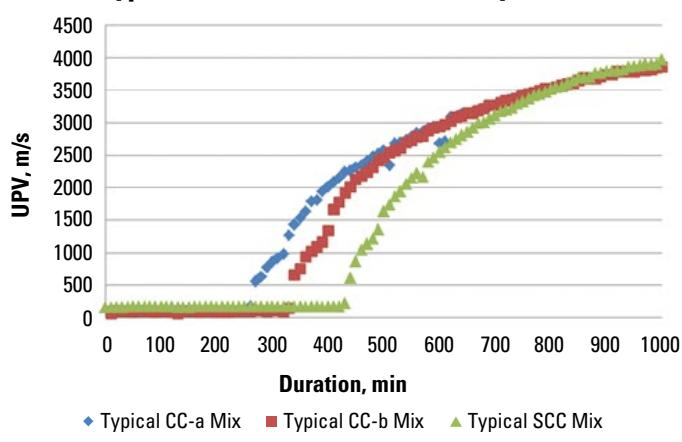
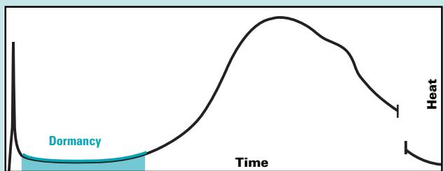
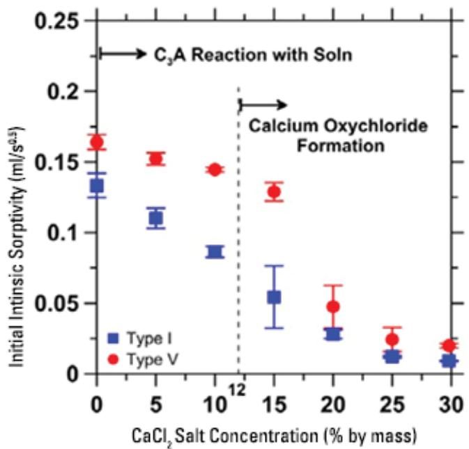
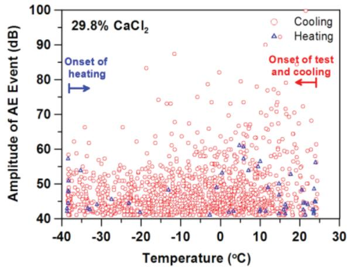

Cement Chemistry
Cement chemistry is the study of the mineral phases in Portland cement, primarily calcium silicates, aluminates, and ferrites, and their irreversible chemical reactions with water known as hydration [1]. This process generates a solid matrix composed mainly of calcium-silicate-hydrate gel and calcium hydroxide, which bind aggregates together to provide mechanical strength and low permeability [1] [2]. The resulting pore structure, particularly capillary porosity determined by the water-to-cement ratio, governs the transport of fluids and aggressive agents through the hardened material [2]. Durability is influenced by secondary chemical pathways, such as the formation of expansive compounds from chloride or alkali-silica reactions, which can be mitigated by incorporating supplementary cementitious materials that consume calcium hydroxide [1] [2] [3].
Sources (4)
Key findings
- Calcium oxychloride formation, triggered by chloride ions reacting with calcium hydroxide, produces expansive compounds that crack the cement matrix [2].
- Sodium chloride brines exhibit minimal reactivity with hydrated cement paste compared to other de-icing chemicals [2].
- The formation of calcium oxychloride significantly reduces concrete’s initial sorptivity, effectively sealing the interior and lowering chloride penetration rates [2].
- Incorporating supplementary cementitious materials dilutes and consumes calcium hydroxide through pozzolanic reactions, thereby suppressing harmful expansive salt formation [2].
- Calcium silicate hydrate (C-S-H) is responsible for most of the concrete’s strength and impermeability, while calcium hydroxide (CH) remains weaker and more soluble [1].
- Adding pozzolans such as fly ash causes calcium hydroxide to react with water and the pozzolan, generating additional C-S-H and reducing the less desirable CH phase [1].
- Calcium silicate alite (C3S) hydrates more rapidly than belite (C2S), providing early strength, while belite continues to hydrate longer to boost later strengths [1].
- Finer cement particles accelerate hydration reactions, increase heat evolution, and shorten set time, necessitating higher calcium-sulfate content to maintain balance [1].
Cement Hydration Kinetics and Phase Evolution
Cement hydration is an irreversible chemical process where water reacts with clinker minerals to form a solid matrix, primarily composed of calcium silicate hydrate gel and calcium hydroxide [1]. The reaction kinetics proceed through distinct stages including initial dissolution, a dormant period controlled by sulfate availability, acceleration, and deceleration [1]. The resulting microstructure consists of a fibrous C-S-H network that provides mechanical strength and low permeability, while calcium hydroxide contributes to the high pH environment but offers minimal structural contribution [1].
The following figure illustrates how the reactions of CA and CS– in solution drive the early heat spike observed during cement hydration.
 Heat evolution curve of cement hydration showing the initial reaction spike and subsequent dormant period. [1]
Heat evolution curve of cement hydration showing the initial reaction spike and subsequent dormant period. [1]
The figure displays a plot of heat generation over time, characterized by an immediate vertical spike followed by a prolonged flat section known as the dormant period.
Research problem — How can researchers identify and mitigate material incompatibilities that disrupt the hydration pathway and compromise the formation of strength-contributing phases [1]? What mechanisms allow chemical admixtures to uncontrolledly retard or accelerate hydration, leading to premature stiffening or permanent flash set that eliminates workability [1]?
State of the art — Contemporary practice relies on a well-established understanding of the hydration sequences of primary clinker phases, particularly managing the rapid reaction of aluminates to prevent flash set while controlling the slower dissolution of silicates that form strength-bearing C-S-H gel [1]. Current mix design strategies focus on fine-tuning kinetics through the use of supplementary cementitious materials, chemical admixtures, and optimized sulfate sources to balance early strength development with durability requirements [1].
The following figure illustrates how ultrasonic velocity increases as the cementitious mixture begins to set.

Ultrasonic velocity accelerates when mixture begins to set [1]The figure plots the ultrasonic pulse velocity (UPV) of three different concrete mixtures as a function of duration, showing how sound speed increases over time. Each curve exhibits an initial period where UPV remains low and constant before accelerating sharply, which corresponds to the point where solid hydration products start to percolate through the sample.
Findings from the reports
- The primary hydration reaction produced calcium silicate hydrate (C-S-H) and calcium hydroxide (CH), with C-S-H responsible for most of the strength and impermeability [1].
- Adding a pozzolan such as fly ash caused CH to react, generating additional C-S-H and reducing the less desirable CH phase [1].
- Gypsum-induced gel coatings on cement grains suppressed rapid C3A aluminate reactions during the dormant period, preventing flash set [1].
- Calcium silicate alite (C3S) hydrated more rapidly than belite (C2S), giving rise to early concrete strength, while C2S continued hydrating longer to boost later strengths [1].
- Finer cement particles accelerated all hydration reactions, increased heat evolution, and shortened set time [1].
- Temperature changes affected the solubility of cement compounds, with even modest shifts altering mix workability and requiring careful control of sulfate form to avoid flash or false set [1].
Novelty & rigor — The research does not introduce novel experimental techniques, relying instead on the conventional use of calorimetry to record time-heat curves from small insulated specimens [1]. Methodological rigor is established through strict adherence to standard production routes and material verification protocols, including specific fineness and oxide composition checks prior to mixing [1].
The following figure illustrates a typical field semi-adiabatic temperature monitoring system for mortar.
 A typical field semi-adiabatic temperature monitoring system for mortar [1]
A typical field semi-adiabatic temperature monitoring system for mortar [1]
The apparatus consists of a portable case containing four circular openings designed to hold specimens. This setup is used for semi-adiabatic calorimetry, which serves as a useful tool in observing the hydration kinetics of a mixture. The system allows for measuring comparative heat gain and initial setting time, which are critical parameters in cement chemistry.
Reported values
| Parameter | Value | Context | Source |
|---|---|---|---|
| alkali content limit (ASR control) | 0.60 percent% | equivalent sodium oxide in portland cement | [1] |
| average particle size | 15 μm | cement particles | [1] |
| Class F fly ash replacement percentage (ASR/sulfate) | 15 to 25 percent% | fly ash usage for sulfate resistance/ASR control | [1] |
| heat of hydration (Class F fly ash) | 50 percent | of cement heat of hydration | [1] |
| maximum w/cm ratio (sulfate exposure) | 0.40 | severe sulfate exposures | [1] |
| particle size (upper limit) | 45 μm | 95 percent of cement particles | [1] |
| slag cement replacement percentage (sulfate resistance) | 20 to 50 percent% | moderate sulfate resistance | [1] |
| specific surface area (Type I cement) | 1,464.7 to 1,953.0 ft²/lb | Typical Type I cements | [1] |
| temperature change threshold | 10°F | mix workability/stiffening | [1] |
| temperature range (calcium oxychloride formation) | 32°F and 122°F | salt concentration dependent reaction | [1] |
| w/cm ratio (sulfate resistance design) | 0.4 or lower | concrete pavement design for sulfate environments | [1] |
Implications — Mix designs must deliberately balance cement composition, supplementary materials, and curing practices to manage the trade-offs between early-age strength development, heat evolution, and long-term durability [1]. Specifiers should select appropriate gypsum levels and fineness to control hydration rates and prevent flash set, while ensuring rigorous moisture retention during curing to maximize the formation of strength-giving phases [1].
Limitations — Standard test methods for determining setting times rely on arbitrary values that do not directly correspond to physical phenomena, limiting the confidence in precise predictions [1]. The relationship between cement fineness and performance is complex, as increased early hydration heat can cause temperature issues while early strength gains often fail to translate into proportionally higher long-term strength [1]. Certain hydration products contribute minimally to overall concrete properties, and specialized cements may provide insufficient protection against specific chemical attacks without additional mix adjustments [1].
The following figure illustrates the thermal behavior of concrete during the dormancy stage.

Heat generation curve showing the dormancy stage in cement hydration. [1]The figure displays a plot of heat versus time, illustrating the thermal evolution during cement hydration. A shaded region labeled “Dormancy” indicates an initial period where the curve remains low and relatively flat before rising sharply. The concrete does not generate heat during the dormancy stage, a phase that allows time for transport and placement before setting begins.
Evidence: 1 report (1 primary)
Chemical Durability: Alkali-Silica Reaction and De-Icing Salt Degradation
Alkali-silica reaction is a chemical process in concrete where hydroxyl ions from the cement’s alkalis react with reactive silica present in certain aggregates, forming an expansive gel that absorbs water and swells [3]. The reaction only proceeds when three essential factors coexist: sufficient alkali availability, moisture, and aggregates containing susceptible siliceous minerals [3].
Research problem — How can the internal expansion and structural damage caused by alkali-silica reaction gel be effectively prevented in airport concrete pavements to ensure flight safety [3]? What mechanisms drive the formation of expansive secondary phases from de-icing salts within hardened concrete, and how do these reactions compromise pavement durability in cold regions [2]?
State of the art — Current practice for mitigating alkali-silica reaction emphasizes controlling alkali content, qualifying reactive aggregates, and incorporating supplementary cementitious materials at sufficient replacement levels to suppress expansive gel formation [3]. De-icing salt degradation is primarily driven by the formation of expansive calcium oxychloride when chlorides react with calcium hydroxide, a process exacerbated by evaporation-induced supersaturation during drying cycles [2]. Mitigation strategies for both phenomena rely on binder design using supplementary cementitious materials to reduce available calcium hydroxide and optimizing mix proportions with low water-to-cement ratios and entrained air to limit fluid ingress and capillary porosity [2] [3].
The figure below illustrates how these mitigation strategies manifest as a reduction in the rate of water absorption due to salt reactions.

Reduction in the rate of water absorption due to salt reactions [2]The figure plots initial intrinsic sorptivity against increasing calcium chloride concentration for Type I and Type V cements.
Findings from the reports
- Alkali-Silica Reaction (ASR) proceeds only when an alkali source, moisture, and reactive siliceous aggregates coexist, whereas Alkali-Carbonate Reaction cannot be mitigated by chemical measures [3].
- De-icing chlorides react with cement paste to form calcium oxychloride, which sharply reduces the concrete’s initial sorptivity and restricts further solution ingress [2].
- Calcium oxychloride is expansive and can crack the cement matrix, particularly at higher salt concentrations and temperatures above freezing [2].
- Sodium chloride shows comparatively little reactivity with concrete and has a minimal effect on hydrated cement paste compared to other de-icing chemicals [2].
- Incorporating supplementary cementitious materials dilutes and consumes calcium hydroxide, thereby suppressing the formation of harmful expansive salts [2].
Novelty & rigor — The research introduces the novel insight that chloride-induced salt formation, particularly calcium oxychloride and related phases, functions as an internal seal that significantly reduces fluid transport within concrete [2]. This work distinguishes itself by coupling a materials-based mitigation strategy using supplementary cementitious materials with low-temperature differential calorimetry to directly quantify the binder’s propensity for salt generation [2]. The approach is reproducible through standardized preparation of concrete mixes with specific supplementary cementitious material contents and entrained air systems, followed by rigorous testing of constituents before deicing salt exposure [2].
The following figure illustrates the passive acoustic emission events recorded during cooling and heating cycles for mortar specimens saturated with varying concentrations of calcium chloride solution.

Passive acoustic emission events versus temperature during cooling and heating for mortar specimens saturated with a 29.8 percent CaCl solution. [2]The figure plots the amplitude of passive acoustic emission (AE) events against temperature, showing scattered data points that represent AE activity during both cooling and heating cycles.
Reported values
| Parameter | Value | Context | Source |
|---|---|---|---|
| CaCl concentration | 12 percent | calcium oxychloride formation in cement paste | [2] |
| calcium chloride concentration | 12 percent% | formation of calcium oxychloride at 23°C | [2] |
| temperature | 23°C | CaCl solution condition | [2] |
Across the reviewed reports, chemical durability mechanisms differ significantly between alkali-silica reaction (ASR) and de-icing salt degradation, with ASR requiring a specific triad of alkalis, moisture, and reactive aggregates while de-icing damage is driven by complex chloride interactions that vary by cation type. While ASR mitigation relies on limiting alkali content or using supplementary cementitious materials to prevent expansion, de-icing salt resistance is influenced by the formation of expansive calcium oxychloride from chlorides reacting with calcium hydroxide, a process that can be suppressed by reducing available hydroxide through mix design. The reports collectively indicate that while sodium chloride has minimal reactivity with hydrated cement paste, calcium and magnesium chlorides are more aggressive due to the formation of expansive oxychloride salts, contrasting with ASR which is primarily mitigated by aggregate selection and alkali control rather than cation-specific salt chemistry. [2] [3]
The following figure illustrates the phase diagrams showing the temperature conditions required for calcium oxychloride formation when hydrated cement paste contacts a calcium chloride solution.
 Phase diagram showing the temperature and calcium chloride concentration ranges for the formation of various hydrated cement phases. [2]
Phase diagram showing the temperature and calcium chloride concentration ranges for the formation of various hydrated cement phases. [2]
The figure displays a phase diagram mapping the stability regions of solid compounds, such as calcium oxychloride hydrates, against temperature and calcium chloride concentration in an aqueous solution.
Implications — Designers must select low-alkali cements or incorporate supplementary cementitious materials to suppress pore-solution alkalinity and prevent alkali-silica reaction, while also avoiding reactive aggregates that can cause expansion regardless of mix optimization [3]. Specifications for de-icing salt exposure should prioritize sodium chloride over calcium or magnesium chlorides to minimize expansive reactions with cement paste, as the latter form damaging oxychloride phases at higher concentrations and temperatures [2]. Mix designs can leverage specific salt-cement interactions by promoting protective secondary phases that reduce fluid transport, though this strategy requires careful management of supplementary cementitious materials to limit free calcium hydroxide and is generally restricted to unreinforced concrete [2].
Limitations — The relevance of calcium oxychloride formation is limited to conditions involving higher chloride concentrations and temperatures above freezing, with magnesium chloride requiring significantly warmer environments [2]. Mitigation strategies using supplementary cementitious materials may inadvertently increase corrosion risks for reinforced concrete due to reduced pH, restricting their suitability primarily to unreinforced applications [2].
Evidence: 2 reports (2 primary)
Alternative Binder Systems: Magnesium Phosphate Concrete Properties
Magnesium phosphate concrete is a rapidly hardening cementitious material that achieves high early strength and forms an impermeable matrix [4]. The binder can be formulated as a single powder mixed with water or as separate magnesium and phosphate components combined on site to allow flexibility in preparation [4]. Its performance is significantly influenced by moisture content, aggregate characteristics, and elevated temperatures that accelerate the setting process [4].
Research problem — How can the sensitivity of magnesium phosphate concrete strength to minor variations in water content be mitigated without compromising workability [4]? What aggregate compositions are compatible with magnesium phosphate binders to prevent adverse chemical reactions that undermine structural integrity [4]? How can the rapid setting kinetics driven by elevated temperatures be controlled to ensure sufficient time for placement and curing [4]?
State of the art — Magnesium-phosphate binders are increasingly utilized for their rapid setting, high early strength development, and impermeability when applied to clean, dry substrates [4]. The technology is commercially available in both one-component powdered formats and two-component systems mixing powder with liquid phosphate solutions [4]. Mix designs are highly sensitive to moisture content, requiring strict control as excess water significantly reduces strength, while limestone aggregates must be avoided due to incompatibility [4]. To address ultra-fast setting times that can occur in high temperatures, manufacturers now supply specially formulated hot-weather mixes [4].
Novelty & rigor — The novelty lies in utilizing magnesium phosphate chemistry to create a rapid-setting, high-early-strength binder that bonds directly to clean dry substrates, offering distinct advantages over conventional Portland cement repair mortars [4]. Reproducibility of this approach is strictly contingent on precise moisture control and the exclusive use of non-limestone aggregates, as even slight surface water or incompatible aggregate types significantly compromise strength development [4].
Evidence: 1 report (0 primary)
Related concepts
In this hierarchy
- Parent: Cementitious Materials
- Sibling: Cement Production
- Sibling: Concrete Durability
- Sibling: Concrete Mixture Design
- Sibling: Sustainable SCMs
Related by shared evidence
- Aggregate Management — shares 4 reports
- Cementitious Materials — shares 4 reports
- Concrete Mixture Design — shares 4 reports
- Concrete Production — shares 4 reports
- Concrete Testing — shares 4 reports
- Cracking Mitigation — shares 4 reports
- Joint Maintenance — shares 4 reports
- Joint Sealing — shares 4 reports
Similar topics
- Moisture Management
- Concrete Mixture Design
- Design Considerations
- Cementitious Materials
- Concrete Durability
- Maturity Methods
- Concrete Testing
- Cement Production
Source coverage
| Source | Cement Hydration Kinetics and Phase Evolution | Chemical Durability: Alkali-Silica Reaction and De-Icing Salt Degradation | Alternative Binder Systems: Magnesium Phosphate Concrete Properties |
|---|---|---|---|
| [1] | ✓ | ||
| [2] | ✓ | ||
| [3] | ✓ | ||
| [4] | ✓ |
References
- Integrated Materials and Construction Practices for Concrete Pavement: A STATE-OF-THE-PRACTICE MANUAL (2019)
- Guide to the Prevention and Restoration of Early Joint Deterioration inConcrete Pavements (2016)
- Best Practices Manual: Quality Control and Quality Acceptance of Concrete Airport Pavement (2025)
- Concrete Pavement Preservation Guide (Third Edition) (2022)
Feedback on this page